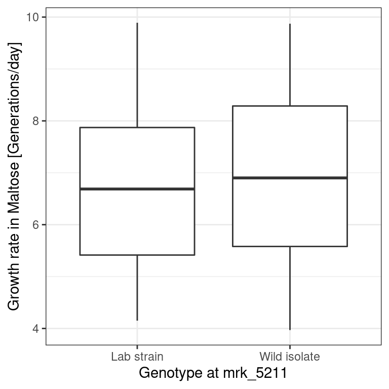
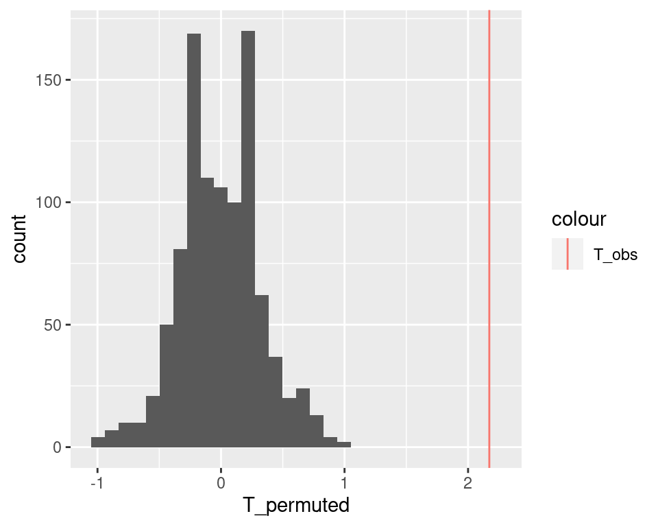
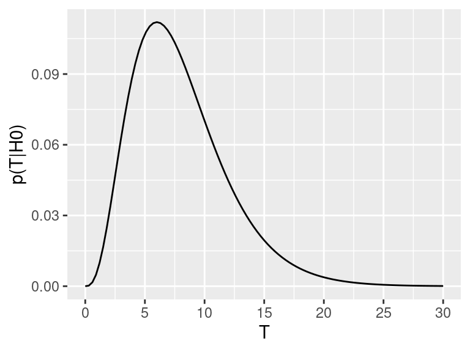
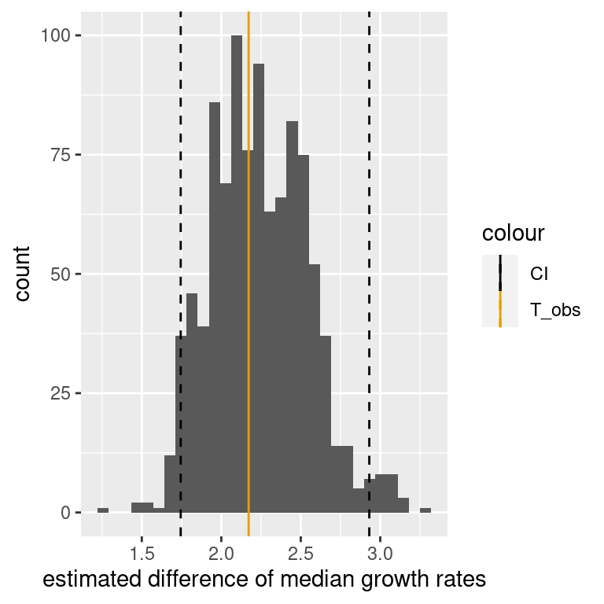
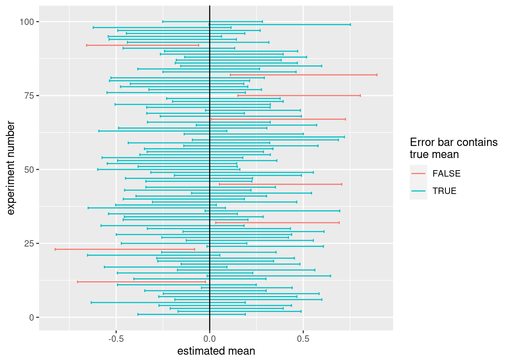

Chapter 7 Resampling-based Statistical Assessment
Suppose a friend says she can correctly predict the winning team in any football game, due to her deep knowledge of the sport. To test this, we ask for her predictions for two Champions League games. She turns out to be right both times. On a first glance, this seems very impressive: she has a \(100\%\) success rate! Should we hence bet a lot of money on her next prediction? What if she is just guessing and got lucky?
Someone who just flips a coin to decide the winner has a \(25\%\) chance to get lucky and guess two games correctly. Accordingly, betting all our life savings that she will be right again next game may not be a very good idea. Hence, the danger is to conclude something based on a limited amount of data. Apparent trends can arise purely by chance, and if we are not careful this can lead us into making the wrong conclusions. Now, what if the friend had correctly predicted the outcome in 4 out of 5 games? What about 237 out of 286 games? When should we start taking her claim seriously?
This chapter introduces concepts and methods to answer these types of questions. We cover the concept of hypothesis testing and of statistical significance, which is another way of saying that a trend is unlikely to have arisen purely by chance. We also introduce the concept of confidence interval which models our uncertainty when estimating parameters such as the mean of a variable. To this end, we provide two largely applicable computational methods: permutation testing and case resampling. These methods are based on resampling the data at hand, thereby making little modeling assumptions.
7.1 The yeast dataset
7.1.1 The experiment
This section introduces a dataset that we will use throughout this chapter, and occasionally in the following chapters.
Yeast is a good old friend of humans. Thanks to yeast, we can make bread, wine, and (not the least for TUM and Munich) beer. Yeast is also very much studied by biologists. The yeast strain that is commonly used in research labs grows poorly on maltose compared to wild yeast strains. Hard to brew malt beer with the lab strain… One may wonder whether the lab strain has acquired a genetic mutation causing this poor fitness in maltose media. If so, on which chromosome, near which gene?
Our dataset (Gagneur et al. 2013) allows addressing these questions (and further yeast genetic questions). The lab strain was crossed with a wild isolate growing well on maltose. Overall, 184 offsprings, also called segregants, were obtained. During a cross, parental chromosomes are recombined at discrete random locations in a process called cross-over.13 Consequently, the chromosomes of the segregants consist of alternated segments inherited from either parent. Yeast has 16 chromosomes. Figure 7.1 illustrates this crossing process for one chromosome.

Figure 7.1: Cross of the lab strain and wild isolate. Meiotic recombination implies that chromosomes of the offsprings consist of alternated segments inherited from either parent.
This shuffling of the genetic information is helpful to identify on which chromosomal location(s) genetic variations responsible for the growth rate difference could reside.
7.1.2 Genotype
The genotype table reports the genotype of each the 184 yeast strains at 1,000 genomic locations called genetic markers. At each marker, the genotype values are either “Lab strain” or “Wild isolate” (Figure 7.2).

Figure 7.2: Sketch of the genotype of segregants (rows) across the 16 chromosomes. The genotypes are provided at 1,000 genomic positions (called markers, vertical line).
See below for a section of the data table:
genotype <- fread("extdata/eqtl/genotype.txt")
genotype <- genotype %>%
melt(id.vars = 'strain', variable.name = 'marker', value.name = 'genotype')
genotype## strain marker genotype
## 1: seg_01B mrk_1 Lab strain
## 2: seg_01C mrk_1 Wild isolate
## 3: seg_01D mrk_1 Lab strain
## 4: seg_02B mrk_1 Lab strain
## 5: seg_02C mrk_1 Wild isolate
## ---
## 157996: seg_49A mrk_13314 Lab strain
## 157997: seg_49B mrk_13314 Wild isolate
## 157998: seg_50A mrk_13314 Lab strain
## 157999: seg_50B mrk_13314 Wild isolate
## 158000: seg_50D mrk_13314 Lab strainIf we want to know where the markers are located in the genome, we can consult the marker table. This table reports genomic coordinates of the markers (chromosome, start, and stop):
marker <- fread("extdata/eqtl/marker.txt")
marker## id chrom start end
## 1: mrk_1 chr01 1512 2366
## 2: mrk_14 chr01 29161 29333
## 3: mrk_27 chr01 38275 38317
## 4: mrk_40 chr01 47695 47695
## 5: mrk_54 chr01 56059 56059
## ---
## 996: mrk_13260 chr16 928119 928130
## 997: mrk_13274 chr16 931402 931594
## 998: mrk_13287 chr16 934388 934624
## 999: mrk_13300 chr16 939647 939679
## 1000: mrk_13314 chr16 944640 9446677.1.3 Growth rates
The growth table contains the growth rates expressed in generations per day for each strain in five different growth media. These growth media are YPD (glucose), YPD_BPS (low iron), YPD_Rapa (Rapamycin), YPE (Ethanol), YPMalt (Maltose).
growth <- fread("extdata/eqtl/growth.txt")
growth <- growth %>% melt(id.vars = "strain", variable.name = 'media', value.name = 'growth_rate')
growth## strain media growth_rate
## 1: seg_01B YPD 12.603986
## 2: seg_01C YPD 10.791144
## 3: seg_01D YPD 12.817268
## 4: seg_02B YPD 10.299210
## 5: seg_02C YPD 11.132778
## ---
## 786: seg_49A YPMalt 4.592395
## 787: seg_49B YPMalt 5.702087
## 788: seg_50A YPMalt 4.303382
## 789: seg_50B YPMalt 6.583852
## 790: seg_50D YPMalt 7.4219687.1.4 Genotype-growth rate association in maltose at a specific marker
In this Chapter, we focus on a simple, targeted question. We know beforehand that the gene MAL13 is important for maltose metabolism. Could genetic variation between the lab strain and the wild isolate near the gene MAL13 be responsible for the growth difference in maltose?
Marker 5211, which starts at positions 1069229 of chromosome 07, is the closest marker to the gene MAL13. We thus ask whether genotype at marker 5211 associates with growth rate in maltose.
To assess this hypothesis, we first create a data table called dt that contains the relevant data and visualize with a boxplot how growth rates distributes depending on the genotype at marker 5211:
mk <- marker[chrom == "chr07" & start == 1069229, id]
dt <- merge(
growth[media == 'YPMalt'],
genotype[marker == mk, .(strain, genotype)],
by = 'strain'
)
p <- dt%>%
ggplot(., aes(genotype, growth_rate)) +
geom_boxplot() +
xlab(paste0("Genotype at ", mk)) +
ylab("Growth rate in Maltose [Generations/day]") +
mytheme
p
dt[genotype == 'Wild isolate', median(growth_rate, na.rm=T)] -
dt[genotype == 'Lab strain', median(growth_rate, na.rm=T)]## [1] 2.172018We see that genotype at that marker indeed associates with a strong difference in growth rates in the Maltose media, with a difference between the medians of 2.17 generations per day.
But, as we already discussed in the motivating section, we need to be careful before making any conclusions. Maybe the pattern we see is an artifact of random variation and would disappear if we had more data. In the following we approach this issue with two concepts. We first look at statistical hypothesis testing, assessing whether the association could have arisen by chance. Next, we will consider parameter uncertainty, which will provide error bars around our difference of medians estimate.
7.2 Statistical hypothesis testing
Statistical hypothesis testing, often just referred to as hypothesis testing, is a method to assess whether an observed trend could have arisen by chance. We first describe intuitively a specific hypothesis testing method called permutation testing, to then describe the general concept.
7.2.1 Permutation testing: An intuitive build-up
We take the proverbial “Devil’s Advocate” standpoint. We consider the possibility that such a large difference of growth rate medians could often arise by chance, would we make arbitrary groups of the same size than those defined by the genotype.
To simulate such random data, we permute the values of the genotype keeping the growth rate values fixed. To permute values of a vector we can use the R function sample() with default parameters as in the example below:
LETTERS[1:8]## [1] "A" "B" "C" "D" "E" "F" "G" "H"sample(LETTERS[1:8])## [1] "B" "H" "D" "G" "A" "E" "F" "C"We now shuffle the genotype column. To keep the original data safe, we work on dt_permuted, a copy of the table dt.
dt_permuted <- copy(dt)
set.seed(0) # the seed of the random number generator
dt_permuted[ , genotype:=sample(genotype)]For this simulated data, the boxplot looks less impressive:
# The %+% operator updates the dataset of a ggplot object
# convenient, isn't it?
p <- p %+% dt_permuted
p
We can also recompute the difference of medians. To not have repeated code, let us define a function (See Appendix B) that takes a table as input. We check immediately that our function properly returns the original difference of medians when applied to dt.
diff_median <- function(tab){
tab[genotype == 'Wild isolate', median(growth_rate, na.rm=T)] -
tab[genotype == 'Lab strain', median(growth_rate, na.rm=T)]
}
T_obs <- diff_median(dt)
T_obs## [1] 2.172018The difference of medians in this permuted dataset is now only 0.21 generations per day:
diff_median(dt_permuted)## [1] 0.2135481This is not fully convincing yet. Maybe our “devil’s advocate” has been unlucky with this one randomization. However, we can easily repeat this operation many times, e.g. 1,000 times. We denote the number of permutations \(m\). We iterate \(m\) times using a for loop (See Appendix B). We record the difference of medians of the i-th iteration in a vector called T_permuted.
# number of permutations
m <- 1000
# initialize T_permuted with missing values
# (safer than with 0's)
T_permuted <- rep(NA, m)
# iterate for i=1 to m
for(i in 1:m){
# permute the genotype column in place
dt_permuted[ , genotype:=sample(genotype)]
# store the difference of medians in the i-th entry of T_permuted
T_permuted[i] <- diff_median(dt_permuted)
} Let us look at how these values distribute with a histogram and mark our original observation with a vertical line:
ggplot( data.table(T_permuted), aes(x = T_permuted) ) +
geom_histogram() +
geom_vline( aes(xintercept=T_obs, color = "T_obs") )## `stat_bin()` using `bins = 30`. Pick better value with
## `binwidth`.
The observed difference of medians stands far out from the distribution of the permuted data. We never observed a difference equal or larger than the original one among 1,000 permutations. We can conclude it is unlikely that such a large difference could have arisen by chance.
This empirical approach is quite intuitive. Let us now formalize it and precisely specify the underlying assumptions in order to understand when and how we can apply it.
7.2.2 Concepts of Statistical Hypothesis Testing
We just implemented one type of Hypothesis test. Figure 7.3 provides an overview of Hypothesis testing.
![We assume an underlying random process (i.e. 'Nature'). We collected data which is a particular realization of this random process, and from this data we computed a test statistic. In the bottom row, we now play the role of the Devil's Advocate and assume that the underlying random process conforms to the null hypothesis. Based on this assumption, diffrent realization datasets could arise as different realizations of the random process, for which the test statistics would get different values. Then we compute how likely it is to see the test statistics as, or more, extreme as the ones we got from our actual data. We use this probability to reject or not the null hypothesis.](assets/img/lec09-stat-testing/lec10_Stat-testing-overview.png)
Figure 7.3: We assume an underlying random process (i.e. ‘Nature’). We collected data which is a particular realization of this random process, and from this data we computed a test statistic. In the bottom row, we now play the role of the Devil’s Advocate and assume that the underlying random process conforms to the null hypothesis. Based on this assumption, diffrent realization datasets could arise as different realizations of the random process, for which the test statistics would get different values. Then we compute how likely it is to see the test statistics as, or more, extreme as the ones we got from our actual data. We use this probability to reject or not the null hypothesis.
7.2.2.1 Test statistic
To develop our test, we first need to define a test statistic (Figure 7.3). This is a single number that summarizes the data and captures the trend. The more extreme the test statistic, the stronger the trend.
The test statistic is often denoted \(T\).
Here we have considered the difference of the medians:
\[ T = \operatorname{median}_{i \in \text{Wild}} (y_i) - \operatorname{median}_{i \in \text{Lab}} (y_i)\]
We could equally consider the difference of the means, or the difference of the means divided by the within-group standard deviation, etc. Some statistics are more useful than others, because one can work analytically with them (see next chapter) or because they are more sensitive. Clearly, if we had considered as test statistics the difference between just two random values of each group rather than the difference of medians, discriminating the observed data from the permuted ones would have been more difficult.
7.2.2.2 The Null Hypothesis
Our test statistic is calculated from a limited number of observations. In our data we see a large difference in median growth rates, but maybe if we had much more data, this difference would disappear, or even change sign. To assess this, we need a negative control. We get such a negative control by setting a null hypothesis \(H_0\), i.e by assuming that the trend we observe is not real and arose purely by chance (Figure 7.3).
The null hypothesis can be compared to the proverbial “Devil’s Advocate.” To test whether a trend is real, we take the skeptical position and assume it is not. It is the same thing we also did in the football example, when we assumed that the friend was just guessing the outcome of the games.
The exact null hypothesis depends on the problem. In our example, the null hypothesis was statistical independence of genotype and growth rate. It can also be that a mean is 0, a Pearson correlation is 0, etc.
7.2.2.3 The P-value
Under the null hypothesis \(H_0\), the test statistic \(T\) follows a certain distribution \(p(T|H_0)\). The \(P\)-value is the probability of obtaining a test statistic the same as or more extreme than the one we actually observed, under the assumption that the null hypothesis is true (See Figure 7.3).
The formal definition of the \(P\)-value depends on whether we take “more extreme” to mean greater, less, or either way:
- For right-tail events: \(P = p(T \geq T_\text{obs}| H_0)\)
- For left-tail events: \(P = p(T \leq T_\text{obs}| H_0)\)
- For double tail events: \(P = 2\min \{p(T \leq T_\text{obs}| H_0), p(T \geq T_\text{obs}| H_0) \}\)
The null hypothesis is said to be rejected for sufficiently small \(P\)-values. In this case we say the result is statistically significant. It is common practice in the scientific literature to set a significance level of \(\alpha=0.05\) and rejecting the null hypothesis if \(P<\alpha\).
We can explore this definition visually. Assume \(p(T|H_0)\), the distribution of the test statistic under the null hypothesis, looks like this:

Now assume the test statistic we observe is \(T_\text{obs}=15\). Then the one-sided \(P\)-value is given by the shaded area which corresponds to \(p(T \geq T_\text{obs}| H_0)\):

For the two-tailed test, we are not expecting the test statistic to be on the upper or the lower side a priori. We therefore consider where it turned out to be (upper or lower) and double the probability. Graphically, we are summing up the area under the curve on the tail of the observed test statistic (upper or lower) with the equi-probable one of the other tail.

This also explains the rather complicated formulation for the two-sided \(P\)-value, which we recall is:
\(P = 2\min \{p(T \leq T_\text{obs}| H_0), p(T \geq T_\text{obs}| H_0) \}\)
The \(\min\) in this formula is to select the correct tail. If our observed test-statistic is more towards the right tail, as in the above picture, then \(p(T \geq T_\text{obs}| H_0)\) will be smaller than \(p(T \leq T_\text{obs}| H_0)\), so the minimum will correctly select the right tail. Then we double this probability, to account for the possibility of observing equally extreme events on the other tail.
When to apply one-sided or two-sided tests?
Say we have as null hypothesis that the true growth rate difference is zero. There are two ways this can be violated: (1) if the true growth rate difference is > 0 or (2) if the true growth difference is < 0. In a one-tailed test, we only account for one of these possibilities. We test \(H_0\): true difference is zero versus \(H_1\) (alternative): true difference is > 0, in the first case. In a two-tailed test, we allow both options. We test \(H_0\): true difference is zero vs. \(H_1\) (alternative): true difference is not zero, and we do not care if it ends up being smaller or larger. In most scenarios the two-tailed test will be most appropriate, as generally there is no reason to privilege effects in one direction over another direction. A one-tailed test will only make sense if you have very good reason (before looking at the data!) that only the effect in one direction is important.
7.2.2.4 Some intuition on Hypothesis Testing and the P-value
To get some intuition on how to interpret the \(P\)-value and this idea of rejecting the null hypothesis, think about a legal trial. Suppose a murder has been committed, and a man has been accused of being the murderer. Under German law he is considered innocent until proven guilty. So, our null hypothesis is that the man is innocent. But we also collect some evidence. For example, we discover that the murder weapon had his finger prints on it, that a witness saw him near the crime scene and that he bought chemicals used to dispose of corpses one day before the crime. None of these facts constitute hard proof that he did commit the crime, but assuming he was innocent, it would require a lot of unlikely coincidences. This corresponds to a scenario where the \(P\)-value is low. Thus, we reject the null hypothesis of innocence and convict him.
Conversely, imagine another trial, where the only evidence we have is that an old lady, who sees rather badly, thinks she maybe saw the accused near the crime scene. This corresponds to a scenario where the \(P\)-value is high. The accused could be guilty, but it also does not seem implausible that he is innocent and the old lady is just mistaking him for someone else. If we start convicting people based on such flimsy evidence, the jail would quickly be full of innocent people. So we do not reject the null hypothesis of innocence.
7.2.2.5 What the P-value is not
The P-value is not the probability of the observed test statistic given that the null hypothesis is true:
\[p(T \geq T_\text{obs}| H_0) \neq p(T=T_\text{obs} | H_0)\]
The problem with basing a test on \(p(T=T_\text{obs} | H_0)\) is that it is dependent on the space of possibilities. This is most apparent for continuous variables: if \(T\) is continuous, then the probability of observing a specific value for the test-statistic, such as \(T=0.34257385692956\), will be zero (recall that, for continuous variables, probabilities are nonzero for intervals only). So \(p(T=T_\text{obs} | H_0) = 0\) for all \(T\), thus this would not give useful \(P\)-values.
Also, the \(P\)-value is not the probability that the null hypothesis is true given the data:
\[p(T \geq T_\text{obs}| H_0) \neq p(H_0 |T=T_\text{obs})\]
Consider again the example with the old lady witness. Surely we cannot convict someone of a murder on such weak evidence, thus we do not reject the null hypothesis of innocence. This being said, we also have no evidence to suggest the accused actually is innocent, so we should not conclude that this is definitely the case either! In other words: “absence of evidence is not evidence of absence.”
Related to this, it is important to note the terminology we used above: when the \(P\)-value is less than the chosen significance level, we reject the null hypothesis. But, in this framework, there is no mechanism to accept the null hypothesis. We can only fail to reject it.
7.2.3 Permutation testing, formally
Formally, the strategy we implemented in Section (7.2.1) is a permutation test.
Generally a permutation test is used to test the statistical dependence between two variables \(x\) and \(y\). In our example, we had one quantitative and one qualitative but they can be of any kind.
The test statistics can be any measure that captures the dependence.
We assumed that the observations are identically and independently distributed (i.i.d). Denoting each observation (a row of the data table) \((x_i, y_i)\) with \(i=1...n\). The data generating process is the same for all observations (identicallly distributed). Moreover, the observations are independent. In particular the order of the indexing (the order of the rows of the data table) can be considered arbitrary.
The i.i.d. assumption if often taken in Hypothesis testing. It is however a tricky one. For instance if you have longitudinal data or confounders (hidden groups in the data). In our case, if the measurement of growth was done in separate day for the segregants of distinct genotypes, the i.i.d assumption could have not held. It is important in real applications to question this assumption, and if possible, to address it, for instance by stratifying the data.
The null hypothesis of a permutation test is that the two variables \(x\) and \(y\) are statistically independent:
\[ H_0: x \perp y\]
Hence, under the \(H_0\), the data generation process of \(x\) is independent of the one of \(y\). Combined with the \(i.i.d\) assumption, this implies that the values of \(x_i\) could have occurred in any other order with the very same likelihood.
This gives us a mechanisms to simulate data under the null (Figure 7.3).
An exact permutation test considers all possible distinct permutation (See next chapter). With a large number of observations as here (\(n=184\)), we can also draw enough random permutations to have decent idea of the distribution of \(p(T|H_0)\).
For a one-sided p-value we do:
- \(m\) be the number of random (Monte Carlo) permutations
- \(r = \#\{T^* \geq T_\text{obs}\}\) be the number of these random permutations that produce a test statistic greater than or equal to that calculated for the actual data.
Then the estimated one-sided P-value, \(\hat P\) is (Davison and Hinkley 1997; Phipson and Smyth 2010)
\[\begin{align} \hat P = \frac{r+1}{m+1} \tag{7.1} \end{align}\]
Permutation P-values should never be zero (Phipson and Smyth 2010). Do not use \(\frac{r}{m}\) as often done!
In our case, we observed no single permutation with larger test statistics. Hence \(r=0\). We thus get:
\[ \hat P = \frac{1}{1001} \simeq 0.01\] So, if we assume that the null hypothesis is true, the probability of observing a difference in median growth rates as, or more, extreme as the ones we actually observed, is less than one in one thousand. We would thus need to be quite unlucky to get results like this by chance. So, we reject the null hypothesis and we say that the association between genotype at marker 5211 and growth rates in maltose is statistically significant.
7.3 Confidence intervals: Quantifying uncertainty in parameter estimates
Hypothesis testing is a very effective way to guard us from being fooled by random patterns in our data. But it only answers a very specific question.
For the yeast example, we observed a difference of median growth rates of about 2.2 between yeast strains with different genotypes at marker 5211. Based on our permutation test, we rejected the null hypothesis that growth rate in Maltose is independent of the genotype at marker 5211. In other words, we concluded that the true difference in growth rates is unlikely to be zero. But does that mean that 2.2 is a good estimate of the true difference of median growth rates? How certain are we about this number?
We often face scenarios like this one, where we would like to estimate a certain quantity and report on the uncertainty of this estimate. This framework is called parameter estimation, and it is summarized in the following diagram:

As before, there is a random process which produced our data, on which we compute summary statistics. But rather than just rejecting a null hypothesis, we now want to infer a parameter from our summary statistics, and also get an idea how precise our inference is. The confidence interval is a method to quantify our uncertainty about a parameter estimate. note that in this scenario we do not need ways of assessing the distribution under a null data generation process, but rather under the actual data generation process.
7.3.1 Repeating experiments to quantify uncertainty
We will first show the intuition behind the confidence interval and show how it can be computed in practice. Only then will we formally define it.
Imagine we have an unlimited budget and can repeat the entire yeast experiment 100 times. Every time we follow the same experimental protocol, and every time we compute the difference of median growth rates between yeast strains with different genotypes at marker 5211. This gives us a distribution of parameter estimates (note that, if the null hypothesis is true, this corresponds to the null distribution).
Assume we get the following distribution:

We see that many estimates are quite close to the one we measured in our first experiment. However, we also see that we get a range of results.
We do not know the true difference of medians, and in theory any of these estimates could be correct. So one way we could quantify our uncertainty is by reporting the full range of estimates we computed. However, this interval can quickly become very big. If we do the same experiment very often, it is quite plausible that we will have a bad day at some point and, for example, contaminate the samples, leading to an estimate that is very different than the others. We don’t want the size of our interval to be entirely determined by one or two such outliers.
A more robust alternative is to report an interval that covers the central \(95\%\) of the values we got:

This interval thus covers the estimates derived from 95 of our 100 experiments, and only excludes the 5 most extreme ones. It seems very plausible that the true difference of medians, whatever it is, is somewhere in this interval, unless we got quite unlucky.
7.3.2 Simulating repeated experiments
The method of repeating experiments is a great way to quantify uncertainty. But in practice, we usually have to work with the data we actually have and cannot just rerun every experiment many times. This would be way too expensive and time consuming.
What we can do, however, is simulate reruns of the experiment by sampling from the data we already have. To this end, the concept of a cumulative distribution function will be useful.
7.3.2.1 Empirical distribution
Consider a random variable \(X\) and a random sample of \(n\) independent realizations drawn from it: \(\{x_1, x_2,...x_n\}\). The empirical distribution is the distribution that gives equal probability to each of these observations.
A single random draw from the empirical distribution amounts to picking one data point with probability \(\frac{1}{n}\). Independent random draws of any size \(m\) are thus equivalent to sampling with replacement.
In R this is obtained using the sample function:
set.seed(10)
x <- rnorm(20) # 20 random numbers normally distributed
xrnd <- sample(x, 15, replace = TRUE) # 15 random draws from the data in x
xrnd## [1] -1.20807618 -0.19515038 -0.59916772 -0.19515038
## [5] 0.92552126 -0.19515038 1.10177950 0.74139013
## [9] 0.01874617 -0.25647839 -0.25647839 0.98744470
## [13] -0.23823356 0.01874617 -1.62667268A fundamental result is that the empirical distribution converges to the underlying distribution. This is best seen when considering cumulative distribution function. The empirical cumulative distribution function (eCDF) is a step function that jumps up by \(1/n\) at each of the \(n\) data points.
\[F_n(x) = \frac{1}{n}\sum_{i=1..n}I_{x_i \leq x}\]
In R, it is obtained by ecdf().
plot(ecdf(x))
The eCDF tells us, for any value \(x\), the proportion of observations less than or equal to \(x\). For example, from the ecdf above, we see that about half of the observations are less than or equal to \(0\). This is equivalent to say that the eCDF tells us, for any value \(x\), the probability of one randomly picked observation among \(\{x_1, x_2,...x_n\}\) to be less than or equal to \(x\). Hence, the eCDF is nothing else that the cumulative distribution of the process of randomly drawing from \(\{x_1, x_2,...x_n\}\).
The empirical distribution function converges almost surely to the distribution function of \(X\). This means that as \(n\) goes to infinity, the empirical distribution and the actual distribution will become more and more alike:
x_small <- rnorm(5)
x_middle <- rnorm(20)
x_big <- rnorm(200)
x_lbl <- c(rep("small_n", 5), rep("medium_n", 20), rep("large_n", 200))
x_combined <- c(x_small, x_middle, x_big)
dt_ecdf <- data.table(sample_size = x_lbl, x = x_combined)
ggplot(dt_ecdf) + stat_ecdf(aes(x, colour = sample_size)) +
stat_function(fun = pnorm) +
ylab("Fn(x)")
The implication is that drawing from the empirical distribution is a justified proxy for drawing from the actual underlying distribution. It is more accurate with large sample sizes.
7.3.2.2 Case resampling bootstrap
Using this idea of drawing from the empirical distribution function, we can simulate experiments. After all, an experiment is like drawing from the true distribution, so if our empirical distribution is close enough to the true distribution, then drawing from it is comparable to doing a new experiment.
Concretely, we take a sample of size \(n\), with replacement, from our observed data, to make a new dataset. This is called the case resampling bootstrap.
Of course, this “new” data will resemble the old data. But, provided that \(n\) is not extremely small, it will almost certainly not be the same. This is because we are sampling with replacement, meaning that we will select some data points several times, and other points may not be selected at all.
Let us perform one bootstrap for the yeast data and recompute the difference of median growth rates:
dt_resampled <-
dt[sample(nrow(dt), replace = TRUE)]
diff_median(dt_resampled)## [1] 2.666546As we see, this value is indeed somewhat different from the one we computed from our original sample.
7.3.3 Quantifying uncertainty using the case resampling bootstrap
Now let us do \(R\) random simulations of the data by case resampling. Each gives a random value for the parameter denoted \(T_i^*\). Let’s rank them by increasing order and denote them:
\[T^*_1 \leq T^*_2 \leq ... \leq T^*_R\] We can do this for our yeast data and visualize the result as a histogram of parameter estimates.
# number of random simulations
R <- 1000
# initialize T_boot with missing values
# (safer than with 0's)
T_bootstrap <- rep(NA, 1000)
# iterate for i=1 to R
for(i in 1:R){
# sample the original data with same size with replacement
dt_boot <- dt[sample(nrow(dt), replace=TRUE)]
# store the difference of medians in the i-th entry of T_permuted
T_bootstrap[i] <- diff_median(dt_boot)
} The 95% bootstrap percentile confidence interval can now be obtained using the quantiles.
More concretely, we use the same idea as we had in the beginning when we actually repeated experiments: we again try to cover the central \((1-\alpha)*100\%\) of the distribution of estimates, where we can choose \((1-\alpha)*100\%\) to be bigger or smaller to depending on how conservative we want to be.
This is achieved by using the interval:
\[ ( T^*_{(R+1)\alpha/2}, T^*_{(R+1)(1-\alpha/2)} )\]
To get a concrete feeling of what this means, assume \(R=99\) and \(\alpha=0.1\). Then, \((R+1)\alpha/2 = 5\) and \((R+1)(1-\alpha/2) = 95\). Thus our \(90\%\) interval is given by \((T^*_{5},T^*_{95})\), i.e. the interval ranging from the 5-th smallest bootstrap parameter estimate to the 95-th smallest bootstrap parameter estimate. It is nothing else than the interval containing 90% of the bootstrap estimates and with equal fraction of the remaining bootstrap estimates on either side (so-called “equi-tailed”).
In R, we can use the quantile function to compute this. For \((1-\alpha)*100\% = 95\%\) interval, we do:
conf_int <- quantile(T_bootstrap, c(0.025, 0.975))
conf_int## 2.5% 97.5%
## 1.74471 2.93088The following plot shows the entire distribution along with the observed value and the 95% bootstrap percentile confidence interval.
ggplot(data.table(T_bootstrap), aes(T_bootstrap)) +
geom_histogram(bins=30) +
geom_vline(aes(xintercept=T_obs, color = "T_obs")) +
geom_vline(aes(xintercept=conf_int[1], color="CI"), linetype="dashed") +
geom_vline(aes(xintercept=conf_int[2], color="CI"), linetype="dashed") +
scale_color_manual(values=cbPalette) +
xlab("estimated difference of median growth rates")
7.3.4 Confidence Intervals: Formal definition
Let us now define a confidence interval formally.
A confidence interval of confidence level \(1-\alpha\) for a parameter \(\theta\) is an interval \(C = (a,b)\), which would the data generation process be repeated, would contain the parameter with probability \(1-\alpha\), i.e. \(p(\theta \in C)=1-\alpha\). A typical value is \(\alpha=0.05\) which leads to 95% confidence intervals.
Note that \(a\) and \(b\) are functions of the data and thus \(C\) is the random variable here, not \(\theta\)!
To get some intuition for this, consider again the scenario where we repeat the yeast experiment 100 times. But instead of computing one \(95\%\) interval from all the experiments, we instead compute a separate \(95\%\) interval for each of the experiments (using, for example, the case resampling bootstrap). Then the true difference of medians, whatever it is, will be contained in about 95 of the computed intervals. In other words, it will happen relatively rarely (about 5% of the time) that we get an interval that happens not to include the true difference of medians.
But note carefully what this means. It means that before we do an experiment, we have a 95% chance to end up with an interval that contains the true value. It does not mean that the specific interval we compute after the experiment has been done has a 95% chance of including the true value. This statement would not even make sense. The true value is a fixed number, so either it is in the interval, or it is not. There is no notion of probability there.
It should be noted that the \((1-\alpha)\) case resampling bootstrap interval is only an approximate \((1-\alpha)\) confidence interval. This means it does not guarantee that \(p(\theta \in C)=1-\alpha\), but only that \(p(\theta \in C)\approx1-\alpha\).
There are other ways to compute confidence intervals, which usually require making further assumptions, such as that the data is normally distributed. See Davison AC, Hinkley DV (1997) for an overview.
7.3.5 Visualizing the formal definition of Confidence Intervals
To visualize the meaning of this definition, we will now consider an example where we know the true value of the parameter. Specifically we assume that we are trying to use the sample mean as estimate of the true mean of a standard normal distribution. Thus, the true mean is zero.
Firstly, let us run the experiment:
set.seed(100)
exp_1 <- rnorm(30) # original data (30 values drawn from the standard normal distribution)Now we compute the sample mean and do a bootstrap resampling:
# Compute observed sample mean
observed_mean <- mean(exp_1)
# Do bootstrap and compute sample mean for each simulation
boot <- lapply(1:1000, function(i){sample(exp_1, 30, replace = TRUE)})
sample_means <- sapply(boot, mean)This creates a distribution of estimates. We build our \(95\%\) case resampling bootstrap confidence interval:
# 95% C.I. is given by the 2.5% and the 97.5% quantile
conf_int = quantile(sample_means, c(0.025, 0.975))
# Plot histogram
bootstrap_tbl = data.table(means = sample_means)
ggplot(data = bootstrap_tbl, aes(x = means)) +
geom_histogram() +
geom_vline(aes(xintercept=observed_mean, color="observed")) +
geom_vline(aes(xintercept=0, color="true")) +
geom_vline(aes(xintercept=conf_int[1], color="CI"), linetype="dashed") +
geom_vline(aes(xintercept=conf_int[2], color="CI"), linetype="dashed") +
scale_color_manual(name = "Legend", values = c(true="black", observed = "blue", CI = "red"))## `stat_bin()` using `bins = 30`. Pick better value with
## `binwidth`.
We see that our interval covers all but the most extreme estimates (the tails of the distribution). It also covers the true value, which is slightly lower than the observed value.
It now remains to show that this interval keeps what it promises, namely that we capture the true value about \(95\%\) of the time if we repeat the “experiment.”
rerun_experiment <- function(j) {
exp <- rnorm(30)
boot <- lapply(1:1000, function(i){sample(exp, 30, replace = TRUE)})
sample_means <- sapply(boot, mean)
conf_int = quantile(sample_means, c(0.025, 0.975))
return(conf_int)
}
rerun <- sapply(1:100, rerun_experiment)intervals <- data.table(t(rerun))
intervals[, idx := 1:100]
intervals[, mid := (`97.5%` + `2.5%`)/2]
intervals[, contains_true := ((`97.5%` >= 0) & (`2.5%` <= 0))]
ggplot(data = intervals, aes(mid, idx, color=contains_true)) +
geom_errorbar(aes(xmin=`2.5%`, xmax=`97.5%`)) +
geom_vline(aes(xintercept=0)) + xlab("estimated mean") + ylab("experiment number") +
labs(color="Error bar contains\ntrue mean")
This plot shows for each repetition of the experiment the confidence interval we computed. The true mean is at 0, but in every experiment, the estimated mean (or sample mean) and deviates from the true mean. The boundaries of the 95% confidence intervals as well are random variables. They fluctuate from experiment to experiment. We want these confidence intervals to contain the true mean 95% of the time. The confidence intervals which contain the true mean (0, marked by the black line) are in blue, those that do not are in red. We see that most of the time, our interval does indeed capture the true value.
In fact we capture the true value \(92\%\) of the time. This is slightly worse than what we expected, but that is not too surprising because the simulation procedure we have used above is approximate. If we use more bootstrap samples, and replicate our experiment more often, we will reach the \(95\%\).
7.3.6 Hypothesis testing with the Confidence Interval
It is relatively common in the scientific literature to perform hypothesis tests using the confidence interval. If our null hypothesis is that a given parameter, e.g. a mean, is zero, and our \((1-\alpha)*100\%\) confidence interval for this parameter does not include zero, we could say that we reject the null hypothesis at a significance level of \(\alpha\). In that sense, hypothesis tests and confidence intervals are related.
This being said, in this chapter we have used approximate methods to compute \(P\)-values and confidence intervals. Thus it need not necessarily be the case that if one of them rejects, the other will too (although, most of the time, they should agree).
In analyses where two groups are compared, as in our yeast example where median growth rates are compared between genotypes, people will often use a different procedure to test hypotheses using the confidence interval. In this procedure, we construct a \(95\%\) confidence interval for the median growth rate of each genotype separately. We then reject the null hypothesis if and only if the confidence intervals do not overlap.
It is important to note that this is not the same as rejecting if and only if the confidence interval for the difference of medians does not include zero, even if it may seem so intuitively. In fact, this “overlap” procedure is too conservative, and will fail to reject more often than the confidence level suggests. In the next chapter, we will give a technical reason for this.
7.4 Discussion
In this chapter we explored ways to avoid being fooled by randomness. Specifically, we discussed hypothesis testing, which is our go-to method to distinguish statistically significant results from noise, and we discussed confidence intervals, which help us to know how uncertain we are about quantities we estimate from our data.
Cares should be taken though. Many misuses of p-values in the scientific literature have been reported, the most obvious being to repeat an experiments until one finally gets P<0.05 and only report this observation in a publication. See Wasserstein and Lazar (2016) for an extensive discussion.
We have looked only at resampling strategies: permutation testing as Hypothesis testing when assessing statistical dependence of variables, and case resampling for confidence intervals. Resampling methods have the advantage that they are simple to implement and make little assumptions about the underlying distribution. However, they are compute intensive. We finally noticed that the i.i.d assumption may be violated in practice. Therefore, careful thinking of possible hidden dependencies (such as confounders) shall be done when applying these methods.
7.5 Conclusion
By now you should be able to:
- Understand what we mean when we say a result is statistically significant
- Understand the terms test statistic, null hypothesis, \(P\)-value and confidence interval and explain their purpose
- Understand that the \(P\)-value is not the probability that the null hypothesis is true
- Use permutation to perform Hypothesis testing of associations
- Use case resampling to compute bootstrap confidence intervals